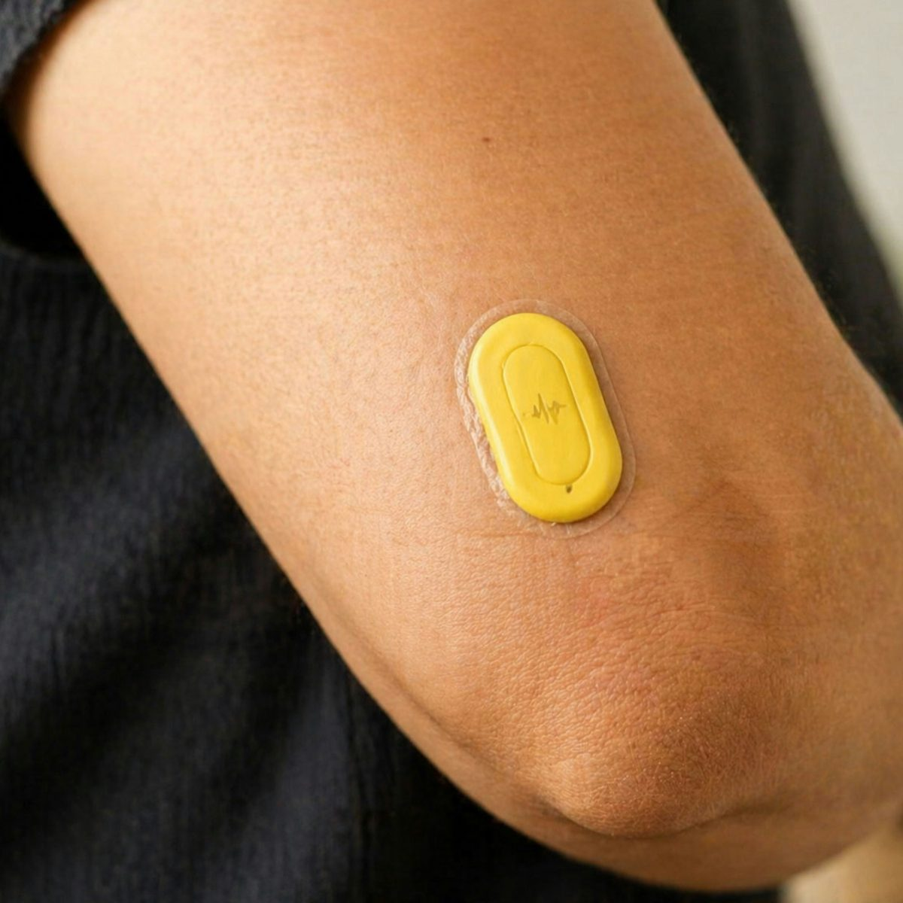

Regulated health companies secure authorization, complete pilots, and sign customers without reaching repeatable, profitable use. Vahana Labs finds the decisions blocking commercialization and sequences them before they become expensive commitments.
Inside regulated health technology
Clinical AI, digital health, connected products
Work involving Gilead and Moderna programs
Brought to market across devices, SaMD, and diagnostics
Managed separately, these decisions produce approvals, pilots, and integrations without commercial momentum. PACE is the order they actually run in.
Choose the indication, buyer, use case, channel, and payment model that can support a viable business. A large market is not necessarily an enterable one.
Connect regulatory strategy, claims, evidence, reimbursement, economics, and contractual obligations. A product can be clinically valuable and authorized without being buyable.
Design pilots, procurement, workflow integration, and adoption around the decision that has to follow. Many companies can secure pilots. Far fewer convert them into sustained use.
Evidence, integrations, buyer materials, and contract positions should become reusable capabilities. When they do not, complexity grows as quickly as revenue.
Where should the next indication, buyer, market, or deployment be faster and less expensive than the last — and why isn’t it?
The goal is cleanly paid, routine, evidence-supported use

A viable contracting and payment model, not pilot funding.
Embedded in normal workflow, not dependent on one champion.
Claims appropriate for the product, population, and buyer.
Actively influencing care, not merely authorized or available.
These are rarely isolated regulatory, commercial, or product failures. They occur at the seams between functions.
Not regulatory submission writing, lead generation, coding research, or a market landscape with no decision attached.
For SaMD, DTx, diagnostic, and AI-enabled clinical companies facing a material commercialization decision in the next 30 to 90 days.
What is blocking commercialization, and what must leadership resolve?
What should the company do, in what order, with which owners and evidence?
Arvita Tripati has nearly two decades across SaMD, diagnostics, clinical AI, regulatory strategy, privacy, evidence, and enterprise adoption — including FDA-regulated AI-enabled products, entry into NHS and VA environments, and scaling regulated clinical platforms involving organizations such as Gilead and Moderna.
The advantage is not another isolated functional opinion.
It is seeing how the decisions interact before they become expensive constraints.
More on the backgroundYou do not need another generic commercialization plan. You need to know what stands between the product and cleanly paid, routine, evidence-supported use.
Pressure-test your commercialization plan →